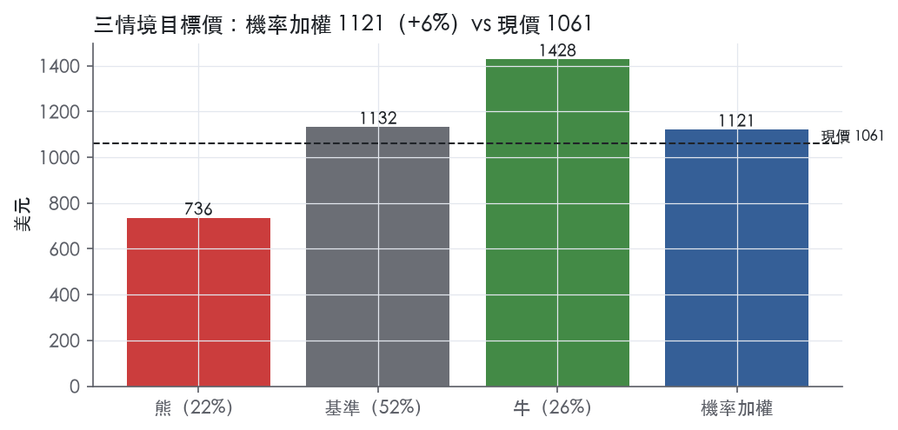
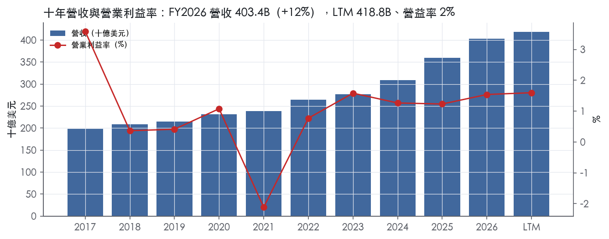
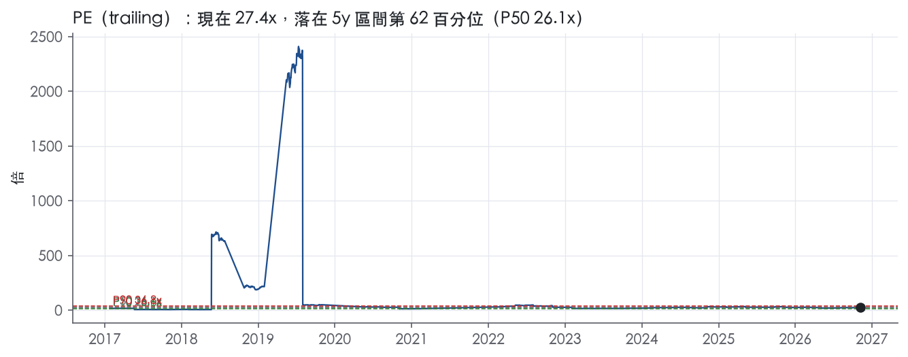
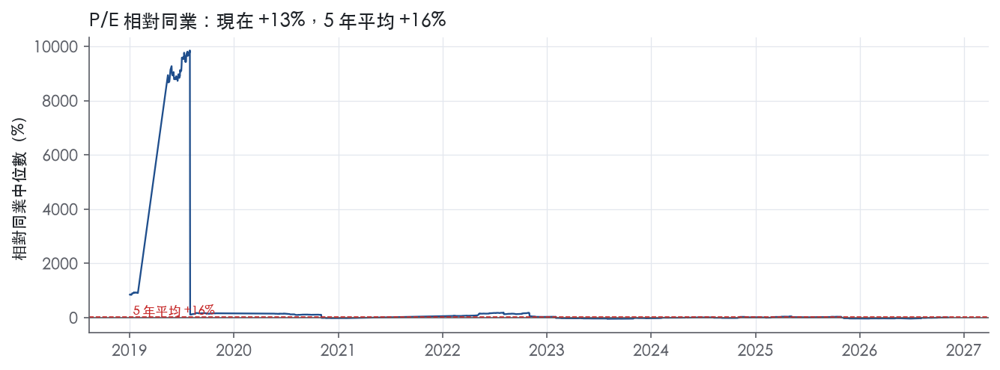
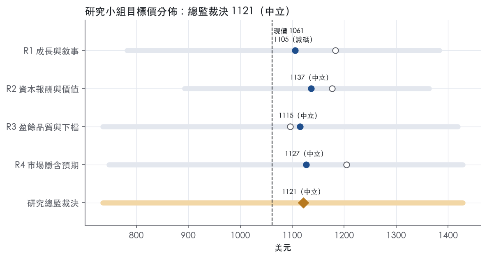
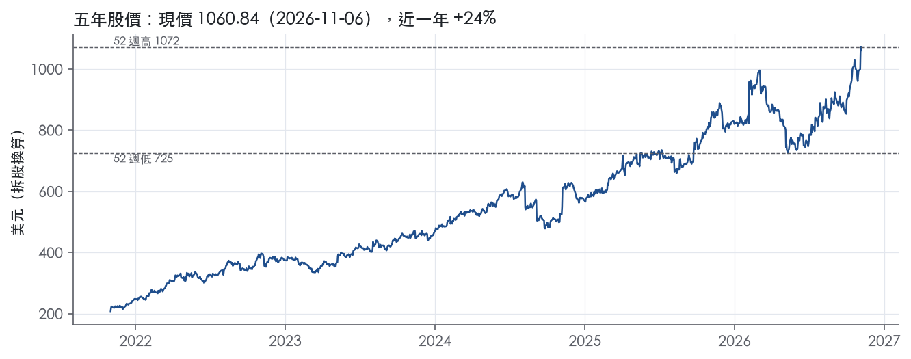

評等總表 › 醫療保健 › MCK
扣一次性後複利仍在，倍數持平，中性｜評等 中立｜目標價 1121
| 報告日 | 評等 | 目標價 | 當時股價 | 超額報酬 |
|---|---|---|---|---|
| 2026-11-06 | 中立 | 1,121 | 1,061 | -3.8% |
| 2026-10-30 | 中立 | 1,057 | 995 | -3.4% |
| 快評 | 動作 | 結論 |
|---|---|---|
| 2026-11-04 | 維持 | GAAP獲利低於預測，指引上調，維持中立 |
| 評等 | 中立（邊界，鄰近減碼） |
| 12 個月目標價 | 1121 美元 |
| 現價 | 1060.84 美元（2026-11-06） |
| 預期報酬 | 股價 +5.7%＋股息 0.3%＝總報酬 +6.0%；同業籃門檻 9.8%，超額 -3.8% |
| 估值方法 | P/E 21.0x，套在第 5–8 季的EPS（也就是一年後的未來四季） |
| 三情境 | 熊 736／基準 1132／牛 1428 |
| 研究流程 | 四位研究員兩輪辯論＋研究總監裁決 |
| 資料來源 | SEC EDGAR XBRL、Tiingo、FRED（全免費） |
扣一次性後複利仍在，倍數持平，中性（研究總監裁決，四位研究員兩輪辯論後）
評等 中立（邊界，鄰近減碼）｜12 個月目標價 1121 美元（總監三情境機率加權 1122 與研究員中位數 1121 各半）｜現價 1060.84（2026-11-06）
預期報酬：股價 +5.7%＋股息 0.3%＝總報酬 +6.0%。同業籃門檻 9.8%，超額 -3.8%，離減碼的分界不到三個百分點，屬邊界評等（落在其他級距的機率約四成）。
估值方法：P/E 21.0x，套在第 5–8 季的EPS（也就是一年後的未來四季）。三情境：熊 736（22%）／基準 1132（52%）／牛 1428（26%）。
什麼會讓研究總監改變看法：FY2027Q3無一次性利得下GAAP營益率高於1.6%且腫瘤分部利益增速追上營收，轉多；併購整合費用攀升、Wellverse分拆延後或腫瘤分部利益連兩季低於10%，轉空。
| 過去四季（實際，FY2027Q2） | 未來四季 | 第 5–8 季 | 第 9–12 季 | |
|---|---|---|---|---|
| 營收（B） | 418.8B | 452.3B | 484.0B | 515.4B |
| 營收成長 | 8.2% | 8.0% | 7.0% | 6.5% |
| 營業利益率 | 1.6% | 1.5% | 1.6% | 1.6% |
| EPS（美元） | 38.73 | 46.59 | 53.90 | 61.96 |
| EPS 成長 | 21.2% | 20.3% | 15.7% | 15.0% |
| 每股股息（美元） | 3.40 | 3.40 | 3.40 | 3.40 |
| P/E（現價） | 27.4x | 22.8x | 19.7x | 17.1x |
| 股息殖利率（現價） | 0.3% | 0.3% | 0.3% | 0.3% |
過去四季為申報數字；預測為研究總監的假設、程式計算。倍數與殖利率都用現價計算，用來看現價對應各期獲利的高低。
| 項目 | 上次（2026-11-01） | 這次（2026-11-09） | 變動 |
|---|---|---|---|
| 評等 | 中立 | 中立 | ＝ |
| 機率加權目標價（美元） | 1,057 | 1,121 | +6.1% |
| 超額報酬 | -3.4% | -3.8% | -0.4 pp |
| 目標倍數 | 21x | 21x | — |
| 未來四季營收成長 | 7.5% | 8.0% | +0.5 pp |
| 未來四季營益率 | 1.5% | 1.5% | +0.0 pp |
| 未來四季 EPS（美元） | 44.72 | 46.59 | +4.2% |
| 熊／基準／牛機率 | 22／50／28 | 22／52／26 | — |
程式計算；「未來四季」各自從當次報告的資料起點算。研究總監逐點說明見第八章「與上次報告比較」。
| 情境 | 機率（歷史） | 故事 | 未來四季營收成長 | 第 5–8 季營益率 | 倍數 | 目標價 | 股價漲跌 |
|---|---|---|---|---|---|---|---|
| 熊 | 22%（22%） | 風險表第3條：併購整合與分拆執行失速，腫瘤分部營收與利益脫鉤延續、Med-Surg續衰、少數股權贖回分走回購現金，倍數退到前瞻帶P25上方 | 6.5% | 1.4% | 16.0x | 736 | -30.7% |
| 基準 | 52%（54%） | 扣除Norway與LIFO後乾淨EPS照調整後指引路徑複利，GAAP低於調整後，一年後前瞻倍數與今天相當 | 8.0% | 1.6% | 21.0x | 1132 | 6.7% |
| 牛 | 26%（24%） | 腫瘤與多專科利益增速追上營收、Precision Medicine服務收入抬高組合利潤率，乾淨GAAP營益率站上1.6%，倍數到前瞻帶P90下方 | 9.0% | 1.7% | 23.5x | 1428 | 34.6% |
目標價由程式依研究總監的驅動與倍數計算；機率由研究總監給定。括號內是歷史頻率：把這檔股票過去十年 12 個月報酬的波動形狀，置中在基準情境，結果落在各情境附近的比例。

四位研究員用不同方法各自估值，回應研究總監的質疑後交出第二輪，最後由總監逐點裁決。各研究員的主張見第七章，裁決理由見第八章，完整論證見《研究底稿》。
| 立場（一輪→二輪） | 加權目標價（一輪→二輪） | 評等（一輪→二輪） | 第二輪倍數 | 熊～牛目標價 | |
|---|---|---|---|---|---|
| R1 成長與敘事 | 中性→中性 | 1183→1105 | 中立→減碼 | 25.0x | 782～1383 |
| R2 資本報酬與價值 | 中性→中性 | 1177→1137 | 中立→中立 | 25.0x | 892～1363 |
| R3 盈餘品質與下檔 | 中性→看空 | 1096→1115 | 減碼→中立 | 21.0x | 736～1419 |
| R4 市場隱含預期 | 看多→中性 | 1204→1127 | 中立→中立 | 20.5x | 747～1428 |
| 研究總監裁決 | 中性 | 1121 | 中立 | 21.0x | 736～1428 |
目標價由程式依各自的驅動與倍數計算；評等＝機率加權總報酬 − 同業籃門檻。
McKesson 是一家以藥品配送為核心、向醫療體系「上游」延伸到腫瘤與專科生技服務的醫療供應鏈公司。公司將業務劃分為北美藥品、腫瘤與多專科、處方技術解決方案、醫療手術用品四個分部，並正推動醫療手術用品分拆為獨立公司 Wellverse¹。客戶集中度極高：十大客戶（含採購聯盟 GPO）在 FY2026 佔總合併營收約 73%，其中最大客戶 CVS Health 一家就佔約 24%²。FY2026 總營收為 403.43B 美元，規模等級上屬於典型低毛利、高周轉的批發分銷商。
北美藥品是公司絕對主力，FY2027Q2 單季營收 91.4B 美元、年增 6%，成長動能來自處方交易量增加，尤其是對醫療體系與策略型客戶的專科產品配銷量增加，部分被品牌藥貢獻下滑抵銷³；但該分部利潤率薄，單季分部營業利益僅 1.1B 美元³。腫瘤與多專科分部是成長最快的引擎，FY2027Q2 營收 15.0B 美元、年增 24%，動能來自醫療providers解決方案與專科配銷成長³；FY2027Q1 該分部年增更達 33%，並明確提到併購貢獻¹。處方技術解決方案分部規模最小，FY2027Q2 營收 1.5B 美元、年增 10%，動能來自第三方物流與用藥取得方案量增，部分被 hub 配藥服務貢獻下滑抵銷³；但利潤率明顯較高，單季分部營業利益 275M 美元³。醫療手術用品分部（即將分拆為 Wellverse）FY2027Q2 營收 3.1B 美元、年增 5%，動能來自延伸照護與門診照護通路成長，單季分部營業利益 164M 美元、調整後營業利益卻年減 10%，因門診照護通路產品組合不利所致³。各分部佔營收比重可由 FY2027Q2 四分部營收（91.4B／15.0B／1.5B／3.1B）相互對照推算，北美藥品仍佔絕大多數營收權重。10-K 層級的分部毛利率細項未在本資料包中完整揭露。
最大客戶集中風險持續存在：FY2026 次兩大客戶合計佔總合併營收 21%（11%＋10%），加上 CVS 的 24%，三大客戶就吃掉公司營收逾五成²。公司明確指出「銷售與信用集中度顯著」，並警示大型客戶或 GPO 流失、付款違約將對財務狀況造成重大不利影響²。海外部分，公司近年持續精簡國際布局：已於 2026 年 1 月完成挪威業務處分、2024 年 12 月完成加拿大零售業務處分，降低了歐元與加幣的匯率風險暴露²。通路上，醫療手術用品分部明確分為「延伸照護」與「門診照護」兩個渠道，兩者消長互有抵換³。公司並在 2026 年 11 月與 CVS Health 簽署延長藥品配銷夥伴關係至 2032 年 6 月的協議，鎖定了最大客戶的長期合約³。
FY2026Q4（截至 2026-03-31）營收 96.30B 美元、年增 6.0%，營益率回升至 2.2%（is 年度/季表）；FY2027Q1（截至 2026-06-30）營收 105.38B 美元、年增 8%，調整後每股盈餘 9.93 美元、年增 20%，但 GAAP 每股盈餘因可贖回少數股權公允價值調整 293M 美元而年減至 5.15 美元¹；當季公司將 FY2027 全年調整後 EPS 指引由 43.80–44.60 上調至 44.20–45.00 美元¹。FY2027Q2（截至 2026-09-30）營收 110.96B 美元、年增 8%，GAAP 每股盈餘 10.44 美元、年增 17%，調整後每股盈餘 11.68 美元、年增 18%，公司再度上調全年調整後 EPS 指引至 45.60–46.40 美元，隱含年增 17%–19%³。期間現金流方面，FY2027Q2 單季營運現金流 3.1B 美元、自由現金流 2.9B 美元³；LTM@FY2027Q2 口徑下營收 418.79B 美元、FCF 7.11B 美元。資本配置上，公司上半年對股東返還 3.6B 美元，含 3.4B 美元庫藏股買回與 198M 美元股息³，並在 FY2027Q1 完成 2.25B 美元的 ASR 買回計畫且連續第十年調升季度股息至 0.94 美元¹。
公司執行長 Brian Tyler 將本季表現歸因於「核心業務分部的營運實力與全企業紀律執行」，並表示持續透過交易強化投資組合、擴大能力並深化在關鍵成長領域的布局，同時維持財務紀律³。CFO Kenny Cheung 將 EPS 指引上調歸因於「業務的強勁與對持續執行能力的信心」，並強調致力以有紀律的資本配置與策略性投資布局未來³。公司明確列出的策略行動包括：以約 1.4B 美元投資 Option Care Health 約 49% 少數股權，以支援複雜專科治療的輸送與社區照護的病人可及性³；完成收購 Precision Medicine Group，作為推進腫瘤、多專科與生技商業化服務策略的重要里程碑³；以及推進醫療手術用品分拆為獨立公司 Wellverse，此前已出售該業務約 13% 少數股權給 Apollo Funds 並設立 2.25B 美元定期貸款以支應分拆¹。整體來看，McKesson 的成長引擎正從傳統低毛利藥品配銷，轉向利潤率較高的腫瘤╱多專科與處方技術解決方案，併購（Core Ventures、PRISM Vision、Precision Medicine Group、Option Care Health）是主要驅動手段。分拆醫療手術用品本質上是把低成長、低利潤率的業務切割出去，讓母公司財報結構更集中在成長與利潤俱佳的生技服務上，EV/Sales 處於近五年 98 分位（附近，=0.2x）反映市場已部分認可這個轉型敘事。風險在於客戶集中度（CVS 單一客戶佔營收近四分之一）與鴉片類訴訟負債（10-K 揭露累計估計負債 5.7B 美元）仍是壓在這個轉型故事上的兩個結構性變數。

McKesson 的護城河評級為窄，趨勢穩定：我們有把握未來 5 年以上其經濟報酬仍高於資本成本，但沒有把握撐到 10 年。支撐來自兩點：規模帶來的成本與營運資本優勢，以及嵌入客戶營運的轉換成本。壓制也有兩點：極端的買方集中度，以及持續下滑的毛利率。程式算出的 ROIC 無法驗證、也無法否定這個評級，原因見「數字上看得到嗎」。本章所附「Item 1」原文實際上是 2026-05-08 申報之 10-K 的 MD&A 與財報段落，沒有競爭段落；文中沿用規定標籤 10-K FY2025 Item 1，但內容是 FY2026 年報數字。
成本優勢是最強的一項，證據是由供應商墊資的營運資本結構。FY2026 期末的應收天數為 22 天、存貨天數為 24 天，應付帳款與匯票天數則為 59 天²。合併營運資本為 (9,807)M 美元，前一年為 (6,206)M 美元²。也就是說，公司用上游藥廠的帳期支應存貨與應收，量體越大、帳期越長；以 FY2026 營收 403.43B 美元的規模，小型批發商難以複製這個結構。
轉換成本是第二項來源。公司為購買其產品與服務的客戶提供融資安排，主要是向客戶或其債權人擔保存貨回購；公司也為部分客戶收購藥局提供貸款，並以藥局作為擔保品²。這類財務綁定讓獨立藥局換供應商時，必須連融資一起處理，構成實質的轉換成本。大客戶方面，業務概況章引述，公司與 CVS Health 的藥品配銷夥伴關係已延長至 2032 年 6 月³。續約證明客戶仍然選擇 McKesson，但每次續約也是一次重新議價；轉換成本對大型連鎖的保護力，遠弱於對獨立藥局的保護力。
無形資產與網路效應在原文中找不到證據，因此不列。效率規模（寡占配銷）在產業結構上很可能成立，但本次原文沒有競爭段落可佐證，依規則不列。
量化底稿的 ROIC 在這家公司是失效指標，既看不到護城河，也構不成反證。底稿 ROIC 最新值 -589.8%、十年平均 -194.6%、標準差 323.6%、區間 -814.0% 至 295.6%；十年平均減資本成本 9.8% 為 -204.5%，9 年中只有 2 年高於資本成本。
問題出在分母。FY2026 期末負債對資本比為 128.0%，前一年為 125.3%，而且該比率的分母使用的是股東權益赤字²。股東權益赤字加上負營運資本，使投入資本接近零甚至為負，ROIC 的正負號與量級因此只反映分母，不反映經濟報酬；ROE 最新值 -224.3%同樣不可用。表面上，底稿顯示 ROIC 長期低於資本成本，與窄護城河的主張衝突。我們不據此下修評級，因為投入資本為負代表公司幾乎不用股東資本就能營運，這本身就是成本優勢在財報上的表現。
可用的檢驗改看現金利潤的穩定度。FCF 利潤率十年平均 1.7%、標準差僅 0.2%、區間 1.3% 至 2.2%；十年間每年 FCF 皆為正，介於 3.61B 美元至 5.72B 美元。FY2021 淨利為 -4.54B 美元，但同年 CFO 仍有 4.54B 美元，可見營業利益率十年最低的 -2.1%是非現金或一次性費用，不是本業失血；資料包未載明該費用的性質。
第二個衝突是毛利率。毛利率從十年最高的 5.7% 降到最新的 3.6%，而最新值就是十年最低。同期營收平均成長 8.3%，每 1 美元營收留下的毛利卻逐年變薄，代表定價權不在 McKesson 手上，這是評級給窄、不給寬的主因。營業利益率最新 1.5%，高於十年平均 1.0%，顯示費用端的規模效益抵銷了毛利稀釋，所以趨勢判為穩定、不判為變窄。
第一個威脅是買方集中度。十大客戶（含 GPO）佔 FY2026 合併營收約 73%；最大客戶 CVS 約佔 24%，次兩大客戶分別佔 11% 與 10%²。公司自承，大型客戶或 GPO 流失、大幅減少採購或重大付款違約，可能對財務狀況、營運結果與流動性造成重大不利影響²。信用風險已經實際發生過：FY2024 因客戶 Rite Aid 破產，公司提列 725M 美元呆帳費用²。
第二個威脅是品牌藥價格。FY2026 的 LIFO 貸項為 210M 美元，主要源於當年度顯著的品牌藥通縮²。品牌藥降價同時影響應收帳款與應付帳款的現金流²。若藥價政策結構性壓低品牌藥價格，毛利與營運資本浮存會同時被壓縮，這等於直接打在成本優勢的核心。
第三個威脅是鴉片類藥物訴訟。FY2026 期末，相關應計負債為 5.7B 美元，多數分年支付至 2038 年，未來 12 個月估計支付 601M 美元²。公司表示，無法合理估計所有鴉片類訴訟可能損失區間的上下限²。這項負債不直接削弱競爭地位，但會長期佔用自由現金流。
第四個威脅來自併購轉型。FY2026 公司分別以 2.5B 美元與 875M 美元取得 Core Ventures 與 PRISM Vision 的權益；期末商譽為 11.3B 美元，淨無形資產為 4.1B 美元²。併購會把投入資本從負值推向正值；若專科業務的報酬不如配銷本業，整體報酬率會被稀釋。
目標倍數相對同業應持平，不給溢價。窄護城河的核心是規模與營運資本結構，寡占同業很可能共享同一套優勢；McKesson 的差異化在於腫瘤與多專科的組合轉型，但這尚未反映在毛利率上。現行 P/E 27.4x 已略高於五年中位數 26.1x，EV/Sales 也位於五年 98.0% 分位（trailing 倍數帶），轉型預期已計入價格；資料包未含同業倍數，估值研究員需自行補齊比較組後套用持平原則。
| 指標 | 最新 | 十年平均 | 標準差 | 最低 | 最高 |
|---|---|---|---|---|---|
| ROIC | -589.8% | -194.6% | 323.6% | -814.0% | 295.6% |
| 毛利率 | 3.6% | 4.8% | 0.7% | 3.6% | 5.7% |
| 營業利益率 | 1.5% | 1.0% | 1.3% | -2.1% | 3.6% |
| FCF 利潤率 | 1.4% | 1.7% | 0.2% | 1.3% | 2.2% |
| ROE | -224.3% | -108.7% | 86.0% | -224.3% | 13.7% |
程式計算。資本成本代理值（10 年債＋5%）：9.8%；ROIC 平均減資本成本：-204.5%；ROIC 有資料的 9 年中，高於資本成本 2 年。
LTM 營業現金流／淨利 1.60x、FCF／淨利 1.51x，近三年平均亦分別為 1.53x 與 1.39x，均為綠燈，代表帳上盈餘持續有現金支撐，並非應計堆出來的。應計比率 LTM -3.1%、近三年 -2.6%、十年 -5.5%，三個期間都是負值，規則上 ≤0% 即為綠燈，顯示 CFO 持續大於淨利，盈餘品質穩健。要留意季度之間現金流波動大：FY2026Q1 CFO 為 -0.92B、FY2027Q1 CFO 為 -0.22B，皆為單季負值（資料包最近八季表），但同年度其他季度（如 FY2026Q4 CFO 3.42B、FY2027Q2 CFO 3.07B）大幅回補，屬藥品配銷業應收應付週轉的季節性，不是盈餘品質的紅旗。存貨成長減營收成長 FY2026 為 -7.1pp（綠燈），代表存貨並未超額堆積吃掉現金。
FY2027Q2 GAAP 稀釋 EPS 10.44 美元，調整後 (Adjusted) EPS 為 11.68 美元，差距約 1.24 美元，年增 18%對比 GAAP 的 17%³。公司明確說明非 GAAP 調整項包括 Adjusted Gross Profit、Adjusted Operating Expenses、Adjusted Other Income、Adjusted Interest Expense、Adjusted Income Tax Expense 等多個項目的重編³。往前看 FY2026 全年，GAAP 稀釋 EPS 38.38 美元（資料包年度表），年度報告中列出的主要 GAAP 口徑特殊項目包括：Norway 處分淨利得 480M 美元（含其中與累積其他綜合損失相關的 164M 美元損失）⁴；重組、減損及相關費用淨額 245M 美元（FY2026）對比 286M 美元（FY2025）⁴；LIFO 信用 210M 美元（FY2026）對比 LIFO 費用 82M 美元（FY2025），主要反映品牌藥價格變動而非經營面改善⁴；反托拉斯法律和解分配收益 23M 美元（FY2026）對比 444M 美元（FY2025），逐年下滑且屬一次性⁴；壞帳準備費用從 FY2025 的信用 130M 美元轉為 FY2026 的費用 100M 美元（Critical Accounting Estimates 段）⁴。
我認為應剔除的「非真實經營成本」項目：Norway 處分利得 480M 美元、反托拉斯和解收益（兩年合計逐年遞減）、LIFO 信用/費用（會計方法波動，非現金經營改善）屬一次性或非經營性。應視為真實成本的項目：重組費用（245M／286M 美元，公司估計同一方案總費用達 650M–700M 美元，將持續到 FY2028）屬反覆性組織調整成本，不應完全加回；Medical-Surgical 分割相關費用（FY2026 SDG&A 內 77M 美元淨費用）與 Corporate 層面分割費用（52M 美元）是分拆交易執行成本，具一次性但金額不大。
槓桿極低且利息保障能力強：淨負債／EBITDA LTM 0.38x、近三年平均 0.21x（遠優於十年平均 1.04x），均為綠燈。利息保障倍數 LTM 21.9x、近三年 19.1x，遠高於綠燈門檻 8.0x。股東回饋方面，FY2026 全年回饋股東現金合計為普通股回購 4.8B 美元加股利 381M 美元⁴，當季新聞稿顯示上半年（FY2027 YTD）回饋股東 3.6B 美元，含回購 3.4B 美元與股利 198M 美元³。回購使稀釋股數持續下降：FY2026 加權平均稀釋股數 124.1M，較 FY2025 的 128.1M 下降⁴，呼應計分表稀釋股數年變動 LTM -2.1%、近三年 -4.4%（綠燈）。資本配置上近期以舉債支應併購：FY2026 完成 Core Ventures 收購 2.5B 美元現金與 PRISM Vision 收購 875M 美元現金⁴，並發行三檔票券（4.65%／4.95%／5.25%）總額 2.0B 美元淨募資用於支應 Core Ventures 收購⁴，同時贖回到期的 600M 歐元 1.50% 票券與 500M 美元 0.90% 票券⁴。這些是擴張性併購與再融資行為，而非財務壓力下的被迫舉債，槓桿仍維持低檔。新增風險：Apollo Funds 以約 1.25B 美元投資取得 Medical-Surgical 分部約 13% 少數股權（可轉換優先股），屬分拆前的資本結構調整，尚待監管核准⁴；FY2027 又宣布投資約 1.4B 美元取得 Option Care Health 約 49% 少數股權³，顯示資本配置從單純回購轉向策略性少數股權投資，值得後續追蹤對 FCF 的排擠效果。
計分表九項全部為綠燈，程式未標出任何紅旗（盈餘品質計分表）。逐項檢視無未解釋紅旗：
估值應以 GAAP 淨利為基礎再逐項扣除一次性利得（Norway 480M 美元利得、反托拉斯和解收益）後的「核心化 GAAP」數字做折現，而非直接套用公司 Adjusted EPS（11.68 美元 vs GAAP 10.44 美元，FY2027Q2），因為非 GAAP 調整項含有重組費用這類會重複發生的成本。盈餘本身不需要因現金品質打折，因為 CFO／淨利與應計比率連續多期健康，但 LTM 盈餘含有 LIFO 信用與處分利得等非經營性加分項，建議對 FY2026 GAAP EPS 做小幅下修後再估值。槓桿極低（淨負債／EBITDA 0.38x）不構成限制倍數的理由，反而支持公司在 Option Care Health、Apollo 少數股權投資等外部擴張上有餘裕，估值倍數可參考現有 P/E 62.1 分位、EV/EBITDA 57.5 分位的中性水位，不必因資本結構風險而額外折價。
| 項目 | LTM | 近三年 | 十年 | 燈號 | 規則 |
|---|---|---|---|---|---|
| 營業現金流／淨利 | 1.60x | 1.53x | 19.8x | 綠 | ≥1.00x 綠、<0.80x 紅 |
| 自由現金流／淨利 | 1.51x | 1.39x | 17.9x | 綠 | ≥0.90x 綠、<0.60x 紅 |
| 應計比率（(淨利−CFO)／平均總資產） | -3.1% | -2.6% | -5.5% | 綠 | ≤0.0% 綠、>5.0% 紅 |
| SBC／營收 | — | 0.1% | 0.1% | 綠 | ≤3.0% 綠、>8.0% 紅 |
| 淨負債／EBITDA | 0.38x | 0.21x | 1.04x | 綠 | ≤1.50x 綠、>3.00x 紅 |
| 利息保障倍數（營業利益／利息） | 21.9x | 19.1x | 10.2x | 綠 | ≥8.00x 綠、<3.00x 紅 |
| 稀釋股數年變動 | -2.1% | -4.4% | -6.3% | 綠 | ≤0.0% 綠、>3.0% 紅 |
| （股利＋回購）／淨利 | 152.7% | 108.3% | 967.3% | 綠 | ≥50.0% 綠、<0.0% 紅 |
| 存貨成長 − 營收成長（FY2026） | -7.1pp | — | — | 綠 | ≤5pp 綠、>15pp 紅 |
程式計算；燈號以 LTM（無則近三年平均）判定。
| 風險 | 觸發指標（看什麼數字、在哪裡看） | 對 EPS 的影響方向與粗略幅度 | 未來 12 個月發生機率（高／中／低） | 出處 |
|---|---|---|---|---|
| 客戶集中度（CVS 及前十大客戶） | 季報「十大客戶佔營收比重」「CVS 佔營收比重」；8-K 是否出現客戶合約變動公告 | 負向，大：CVS 一家佔 FY2026 營收約 24%，前十大佔 73%² | 低（已簽約至 2032/06）³ | 10-K 年報 FY2025 Item 1（業務） |
| 鴉片類訴訟負債持續上調 | 每季財報「opioid-related claims 估計負債」餘額變動；是否有新司法管轄區求償或判決 | 負向，大：FY2026 底累計估計負債 5.7B 美元，公司明言「無法估計損失上下限」⁵ | 中（既有負債仍在逐年攤還至 2038，新增求償機率存在但不確定） | 10-K 年報 FY2025 Item 1（業務） |
| 併購整合與分拆執行風險（Core Ventures、PRISM Vision、Precision Medicine Group、Option Care Health 少數股權、Medical-Surgical／Wellverse 分拆） | 每季「acquisition and integration charges」項目金額；Wellverse 分拆完成日與監管核准進度公告 | 負向，中：FY2026 已認列併購整合費用 96M 美元、分拆相關費用 77M＋52M 美元² | 中（多筆交易同時進行，執行複雜度高） | 10-K 年報 FY2025 Item 1（業務） |
| 商譽與無形資產減損 | 年度首季商譽減損測試結果；股價／市值是否長期顯著低於內含價值 | 負向，中：FY2026 底商譽 11.3B 美元、無形資產淨額 4.1B 美元，公司明言折現率上升或現金流假設惡化可能觸發減損² | 低（過去三年測試均無減損）² | 10-K 年報 FY2025 Item 1（業務） |
| 槓桿上升與股東權益結構脆弱（負股東權益） | 每季「debt to capital ratio」、淨負債、庫藏股買回金額對比 FCF | 負向，中：FY2026 底 debt to capital ratio 128.0%，高於 FY2025 的 125.3%² | 中（公司持續大規模買回庫藏股，FY2027 上半年已回購 3.4B 美元）³ | 10-K 年報 FY2025 Item 1（業務） |
客戶集中度是最大的結構性風險，前十大客戶（含 GPO）佔 FY2026 總合併營收約 73%，其中最大客戶 CVS Health 單一就佔約 24%，次兩大客戶合計再佔 21%²。公司在關鍵會計估計章節直接寫明：「大型客戶或 GPO 的材料違約、採購大幅減少，或流失大型客戶或 GPO，可能對財務狀況、經營成果與流動性造成重大不利影響」²。2024 年 Rite Aid 破產已造成一次性壞帳衝擊（FY2024 認列 725M 美元壞帳費用）²，證明這類集中度風險是可實現的，不是理論性條款。好消息是公司已在 2026 年 11 月與 CVS 簽署延長配銷合約至 2032 年 6 月³，短期機率降為低，但這代表公司的議價空間長期被鎖在少數大客戶手上，任何重新議約時點都值得緊盯。
鴉片類訴訟負債是帳上已認列但仍可能持續擴大的尾部風險。FY2026 底估計負債已達 5.7B 美元，公司明確表示「無法合理估計所有鴉片相關訴訟最終損失的上下限範圍」，且「任何不利判決或和解結果可能對經營成果、財務狀況與現金流或流動性造成重大不利影響」²。這筆負債多數將以分期付款方式支付至 2038 年，未來 12 個月內到期的部分為 601M 美元²，現金流衝擊是可預期的，但負債本金是否再被上修才是真正的 EPS 風險點。
併購整合與分拆執行風險反映公司近一年同時推進多筆大型交易：Core Ventures（2.5B 美元）、PRISM Vision（875M 美元）、Precision Medicine Group（已於 2026/11/02 完成收購）、Option Care Health 約 49% 少數股權投資（約 1.4B 美元，尚待監管與股東核准）³，以及醫療手術用品分拆為 Wellverse（已引入 Apollo Funds 約 13% 少數股權、1.25B 美元可轉換優先股投資）²。FY2026 已認列併購整合費用 96M 美元，分拆相關費用在 SDG&A 與 Corporate 合計超過 100M 美元²。多頭並進的交易節奏意味著整合不順、協同效益不如預期、或分拆延遲，都會直接侵蝕原本靠併購拉動的毛利率改善故事。
商譽與無形資產減損風險來自於公司近年密集收購推升商譽與無形資產規模（FY2026 底商譽 11.3B 美元，較 FY2025 的 10.0B 美元增加；無形資產淨額由 1.5B 美元增至 4.1B 美元）²。公司在關鍵會計估計中列出減損觸發因子：「未達成業務計畫、政府給付率負面變動、美國與全球金融市場惡化、利率上升，或股權融資成本上升」。過去三年測試均未發生減損，顯示目前現金流假設仍有緩衝，但隨著併購資產佔比提高，未來對折現率與終值假設的敏感度也隨之提高。
槓桿上升與股東權益結構脆弱是資本配置紀律與財務彈性之間的取捨。公司債務對資本比率由 FY2025 的 125.3% 升至 FY2026 的 128.0%，主因是庫藏股買回、股息發放與長期債務到期攤還²。McKesson 股東權益本身為負值（deficit 結構），長期依賴持續買回股票與穩定自由現金流維繫，若自由現金流因前述任一風險轉弱，槓桿結構的緩衝空間相對有限。FY2027 上半年公司仍持續大舉回購（3.4B 美元）並將回購授權上調至 7.7B 美元³，顯示管理層對資本配置紀律的信心，但也代表財務彈性被持續消耗。
現價 1060.84 對應 trailing（過去四季）P/E 27.4x、EV/EBITDA 18.0x、EV/EBITA 18.1x、EV/Sales 0.3x、FCF 殖利率 5.7%。主要估值倍數 P/E 現在 27.4x，落在5 年區間第 62 百分位（P10／P50／P90 = 16.6x／26.1x／36.8x）。

把程式的機械基準預測放到現價下，市場付的前瞻倍數是：P/E（未來四季） 21.3x、P/E（第 5–8 季） 18.9x。反推 DCF 顯示市價隱含未來五年營收年成長 8.2%（WACC 9.0%、終值成長 3.0%、FCF 利潤率 1.3%，SBC 不加回）。
| 倍數 | 現在 | 5 年 P10 | 5 年 P50 | 5 年 P90 | 現在分位 | 全期 P50 |
|---|---|---|---|---|---|---|
| P/E | 27.4x | 16.6x | 26.1x | 36.8x | 62.1% | 25.8x |
| EV/EBITDA | 18.0x | 12.3x | 17.5x | 20.1x | 57.5% | 18.3x |
| EV/EBITA | 18.1x | 13.0x | 18.6x | 21.7x | 45.1% | 18.9x |
| EV/EBIT | 18.9x | 13.7x | 19.9x | 23.4x | 41.8% | 20.6x |
| EV/Sales | 0.3x | 0.2x | 0.2x | 0.3x | 98.0% | 0.2x |
| P/S | 0.3x | 0.2x | 0.2x | 0.3x | 98.9% | 0.2x |
| P/FCF | 17.4x | 10.5x | 14.4x | 21.4x | 75.9% | 11.6x |
trailing 倍數（股價 ÷ 過去四季）；分位以每個交易日計算。
同業籃：COR, CAH, HSIC, CVS（手動名單（playbooks/peers.yaml））。評等門檻 9.8%：同業「倍數不變下持有一年」的隱含報酬中位數（＝ FCF 殖利率 ×(1＋g)＋g，g 為 5 年營收年複合成長並夾在 −2%～8%），每家夾在 0～15%、P/E 低於 5 倍視為資料可疑而排除，中位數再限制在 10 年債到 10 年債＋5% 之間（同業原始中位數 14.9%）。
| 代號 | 市值 | 5 年營收 CAGR | 營益率 | ROIC | P/E | 5 年 P/E 中位數 | EV/EBITDA | P/FCF | 隱含報酬 |
|---|---|---|---|---|---|---|---|---|---|
| MCK | 123.8B | 11.1% | 1.6% | -589.8% | 27.4x | 26.1x | 18.0x | 17.4x | 14.2% |
| COR | 63.7B | 11.1% | 0.9% | 54.4% | 24.8x | 24.2x | 17.8x | 15.7x | 14.9% |
| CAH | 64.4B | 9.4% | 1.0% | 135.8% | 39.2x | — | 20.7x | 11.7x | 17.2% |
| HSIC | 9.5B | 5.4% | 5.2% | 8.3% | 23.7x | 22.2x | 12.3x | 17.0x | 11.6% |
| CVS | 107.3B | 8.4% | 3.6% | 2.9% | 9.7x | 17.9x | 7.8x | 6.9x | 23.7% |
| 同業中位數 | 8.9% | 2.3% | 31.3% | 24.2x | 22.2x | 15.1x | 13.7x | 9.8% |
全部 trailing，程式以各公司 SEC XBRL 與 Tiingo 行情計算；第一列為本檔。
P/E 相對同業中位數：現在 13.0%，過去 1 年平均 -20.3%、3 年 -1.2%、5 年 16.2%；EV/EBITDA 相對同業中位數：現在 17.9%，過去 1 年平均 8.5%、3 年 26.8%、5 年 27.5%。

事後實現前瞻倍數帶（P/E，2018-11-19..2025-11-17）：P10／P50／P90 = 12.0x／18.2x／23.9x。它是每個交易日的股價除以之後四季實際實現的指標；一年後，今天的第 5–8 季正是那時的未來四季，所以這條帶是 12 個月目標價的同口徑倍數。因為用的是事後實際而非當時預期，過去成長超乎預期的公司這條帶會偏低。
程式的機械基準（成長率從過去四季年增率三年收斂到 6%、利潤率持平）用 事後實現前瞻 P/E P50 估值得到 1021（-3.7%），市場現行前瞻倍數（現價 ÷ 基準 未來四季指標）一年後持平，套在基準 第 5–8 季指標得到 1195。這兩個數字只是參考點，不是本報告的目標價；研究員對這個定價的回應在第七章。
下表是每位研究員第一輪（各自獨立）與第二輪（回應研究總監的質疑後）的結果。目標價全由程式依各自的假設計算。
| 立場（一輪→二輪） | 加權目標價（一輪→二輪） | 評等（一輪→二輪） | 第二輪倍數 | 熊～牛目標價 | |
|---|---|---|---|---|---|
| R1 成長與敘事 | 中性→中性 | 1183→1105 | 中立→減碼 | 25.0x | 782～1383 |
| R2 資本報酬與價值 | 中性→中性 | 1177→1137 | 中立→中立 | 25.0x | 892～1363 |
| R3 盈餘品質與下檔 | 中性→看空 | 1096→1115 | 減碼→中立 | 21.0x | 736～1419 |
| R4 市場隱含預期 | 看多→中性 | 1204→1127 | 中立→中立 | 20.5x | 747～1428 |
| 研究總監裁決 | 中性 | 1121 | 中立 | 21.0x | 736～1428 |
目標價由程式依各自的驅動與倍數計算；評等＝機率加權總報酬 − 同業籃門檻。
分歧度：第一輪 加權目標價 1096～1204（區間＝現價的 10%）· 倍數 20.5～25x · 立場 中性×3、看多×1；第二輪 加權目標價 1105～1137（區間＝現價的 3%）· 倍數 20.5～25x · 立場 中性×3、看空×1。

| 研究員 | 第二輪主張 | 堅持的理由 |
|---|---|---|
| R1 成長與敘事 | 中性，25x未來一年EPS，錨同業COR的24.8x。 | 營收不下修，Precision Medicine併表撐住明年8.0%成長。 |
| R2 資本報酬與價值 | 中性，25x未來一年EPS，錨自家五年中位數26.1x與同業24.2x之間。 | 不用前瞻倍數帶的較高分位，訴訟年度讓帶的偏誤方向不一致。 |
| R3 盈餘品質與下檔 | 相對同業看空，21x GAAP EPS，錨前瞻倍數帶18.2x與21.7x之間。 | 股數年減只給3.5%，上半年回購靠加速回購與舉債，無法延續。 |
| R4 市場隱含預期 | 中性，20.5x，低於市場持平的21.3x。 | 倍數該收縮，市場付21.3x的EPS起點已被一次性利得墊高。 |
每位研究員的逐條回應與完整論證見《研究底稿》（MCK_研究底稿_2026-11-09.docx）。
| 分歧點 | R1 成長 | R2 價值 | R3 品質 | R4 預期 | 什麼資料會分出勝負 |
|---|---|---|---|---|---|
| 目標倍數與口徑 | 25x eps@ntm，錨 COR 24.8x／自家 5y P50 26.1x | 25x eps@ntm，錨 5y P50 與同業中位數之間，承認偏離主尺 | 21x eps@q5_q8，錨前瞻帶 P50 18.2x／P75 21.7x | 20.5x eps@q5_q8，同錨、低於市場持平 21.3x | FY2028Q2 財報後（2027-11）同時看兩把尺：trailing P/E 是否守住 25x、前瞻 P/E 是否回到 21x 以下 |
| 營益率 y1／y3 | 1.45%／1.55% | 1.50%／1.60% | 1.50%／1.60% | 1.55%／1.65% | FY2027Q3 財報（2027-02）：第一個沒有 Norway 利得的對照季；腫瘤與多專科調整後分部利益增速 |
| 股數年變動 | −5.0%（沿用基準） | −4.0% | −3.5% | −4.0% | FY2027 下半年回購金額對 FCF；Option Care 1.4B 交割後的總債務 |
| 營收 y1 | 8.0% | 7.5%（沿用） | 7.5%（沿用） | 8.0% | FY2027Q3 合併營收年增是否因 Precision Medicine 併表站上 8% |
| 熊情境主線與底部倍數 | 品牌藥價格，20x@ntm，26% | 品牌藥法定降價，21x@ntm，29% | 風險表第 3 條併購整合失速，16x，20% | LIFO 翻轉＋品牌藥（無風險表），17x，22% | 每季 8-K 併購整合費用、Wellverse 分拆時程；FY2027Q4 LIFO 方向（2027-05） |
1. 倍數與口徑——裁 R3（21x eps@q5_q8）。 劇本主尺是 eps@q5_q8，事後實現前瞻帶可直接比較。R1、R2 用 trailing 錨配 ntm，25x 低於現行 27.4x 看似保守；但同一套基準驅動下，trailing 5y P50 26.1x@ntm 給 1303、市場持平 21.3x@q5_q8 只給 1195（基準估值）。這說明 trailing 帶的 P50 在這家公司隱含的是前瞻倍數擴張：FY2019 EPS 0.17、FY2021 −28.26等訴訟年度把 trailing 帶的分母壓到極低。R1、R2 都主張「窄護城河、不給溢價、同業溢價已重估」，錨卻選了隱含擴張的那條帶，自相矛盾；他們的目標價落在 1130、1159（第二輪結果），是用比我更低的營益率抵銷了較高的倍數。R2 V4 說前瞻帶偏誤在樣本內方向不一致，這點成立，但正確結論是「取中段、不取尾端分位」，不是整條捨棄；trailing 帶同樣含那些年度的扭曲。R4 的 20.5x 與 R3 的 21x 在誤差內，取 21x：高於 P50 18.2x，因為帶因 2018–2025 實現 EPS 超預期而偏低（劇本備註），鴉片負債已量化為 5.7B、CVS 延約至 2032 移除最大客戶尾部³；不到 P75 21.7x，因為上半年 GAAP EPS 15.53 對調整後 21.59 的落差³、少數股權淨利年增 81%⁴、重組費用持續到 FY2028，且相對同業 P/E 溢價已從 1 年平均 −20.3% 翻到 13.0%（同業表）。相對市場持平 21.3x 只差 −1%（程式檢查表）——我不是看空倍數，而是認為市場付倍數的 EPS 起點偏高。
2. 營益率路徑——y1 裁 R2／R3 的 1.50%，y3 裁 1.60%（own，回到基準）。 四人都同意 LTM 1.6% 被 Norway 480M 與 LIFO 貸項 210M⁴墊高，爭的是扣多少。R1 的 1.45% 錨在非 Q4 三季（1.3%–1.5%）上緣，忽略 FY2025Q4 1.8%這個沒有一次性項目的乾淨季節高點；本部營業利益預測有系統偏低紀錄（總監 −1.7%、R1 −2.3%），要往反方向修。R4 的 1.55% 要求 NTM 高於乾淨 LTM，但他的證據（北美藥品調整後分部利益 +22%、處方技術 +18%）被腫瘤與多專科營收 +24% 對利益 +8%、Med-Surg 調整後利益 −10%³抵銷，且 R4 是唯一營業利益誤差偏高（+1.3%）的研究員。1.50% 是 FY2027 上半年 1.3%、1.4%（FY2027Q2）加回乾淨 Q4 季節性的假設。y3 不給 R4 的 1.65%——那是 FY2018 以來新高（最高是 FY2023 的 1.6%），腫瘤分部的利潤轉換還沒出現；也不給 R1 的 1.55%——他的理由是 Wellverse 分拆拉低合併營益率，但分拆是報表口徑改變、股東拿到股票，不進驅動（同意 R4）。
3. 股數——裁 R2／R4 的 −4.0%。 基準 −5.0% 需要全年回購接近 7.7B 授權全部，等於 LTM FCF 7.11B扣股利後全數加舉債，R1 沿用卻無論證。R3 的 −3.5% 指出上半年 2.25B ASR 是前置、上半年回饋 3.6B 高於 FCF 2.6B、總債務從 6.53B 升到 9.21B（FY2027Q2），事實成立；但他漏了淨負債／EBITDA 0.38x 與授權上調至 7.7B³給的舉債空間，管理層的行為模式是回購不等 FCF。FY2026 實際 124.1M 對 128.1M⁴與近三年 −4.4%（財務體質章）之間，−4.0% 對應「Option Care 1.4B 與 Precision Medicine 分走現金、回購不停」。
4. 營收 y1——裁 R1／R4 的 8.0%。 Precision Medicine Group 於 2026-11-02 完成收購並開始併表³，LTM 年增率外推的 7.5% 抓不到這筆無機貢獻；近兩季年增已是 7.7%、7.6%（FY2027Q2）。R2 看不到新聞稿，是證據缺口；R3 看得到卻沿用基準而無說明。Option Care 49% 走權益法不併營收，不再往上加。本部營收預測全員誤差偏低（−0.5% 到 −0.7%），方向也支持上修。
5. 熊情境——裁 R3（風險表第 3 條，16x）。 R1、R2 的品牌藥通縮、R4 的 LIFO 翻轉都不在風險表上，R4 自己標註「無風險表」；品牌藥貢獻下滑是兩季新聞稿都提到的事實，但已在 1.50% 起點裡，不是尾部事件。R3 的主線——Core Ventures、PRISM、Precision Medicine、Option Care、Wellverse 分拆並行之中任一整合失速——對應風險章評「中」的第 3 條，並以腫瘤分部營收與利益脫鉤（前季 33% 對 41%，本季 24% 對 8%¹,³）為已出現的早期訊號，股數放慢到 −2.5% 對應可贖回少數股權與回購爭奪現金。R2 的熊只有 −23%，比置中分布 P25 −14% 深不了多少，不是尾部。底部 16x 落在前瞻帶 P25 15.1x 之上、P50 之下：不到 P25 是因為 P25 以下樣本集中在鴉片負債無上限的年份，而這條熊線不含鴉片上修。
漂移、立場標籤與總經。 四位第二輪都朝遠離中位數方向修正（漂移表：R1 −958%、R2 −594%、R4 −79%），R3 +1.7% 靠攏比例 21%，所有變動都對應我第一輪意見且附證據，沒有要退回的漂移，drift_rejections 為空。要點出一件事：R3 把「基準報酬低於門檻」改標為看空，但程式評等已是相對同業，他第二輪超額 −4.4% 落在中立區，標籤與評等不一致；我以他的數字為準。總經方面，四位 macro_deviations 皆空，全部接受：處方量能對 GDP 1.8% 不敏感，國際曝險已隨挪威、加拿大處分縮小，利息保障 21.9x（財務體質章）使政策利率 4.38% 不降的影響很小；總經敏感度 t 值 1.0 不可用，我不以利率調倍數。
與機械基準不同的驅動：
目標倍數 21x，eps／第 5–8 季。錨是事後實現前瞻 P/E 帶 P50 18.2x 與 P75 21.7x 之間偏上，相對市場持平 21.3x 為 −1%（程式檢查表）。相對同業：護城河章判定窄、不給溢價；真正可比的 COR 現行 24.8x 貼近其 5 年中位數 24.2x（同業表），類股沒有重估，MCK 的 13.0% 溢價是個股重估，一年後不假設再擴。交叉驗證：R2 的 25x@ntm 在他的驅動下得 1159（第二輪結果），我的 21x@q5_q8 在營益率相同、營收與股數略高的驅動下預期落在相近水準，兩條錨收斂。
機率從歷史對照出發：R3、R4 的牛熊距離（+25%～+27%／−34%～−35%）與我相近，程式對照為 23%～25%／22%。牛給 26%、高於歷史 1～3pp，公司特有理由是調整後 EPS 指引一年內兩次上修至 45.60–46.40¹,³與 CVS 延約至 2032 移除最大客戶尾部；熊 22% 照歷史，第 3 條風險章評「中」，但 LTM FCF 7.11B 與淨負債／EBITDA 0.38x 的緩衝讓整合失速不會演變成流動性事件。牛大於熊，順序與歷史一致，修正本部 22 份報告熊高於牛的偏誤。
市場對基準 Q5–Q8 EPS 56.15 付 18.9x、對 NTM EPS 49.84 付 21.3x（市場隱含前瞻倍數），而基準 EPS 建立在含 Norway 利得與 LIFO 貸項的 1.6% 營益率上；差距在盈餘起點、在 op_margin_y1 這一個驅動，不在倍數——我的 21x 與市場持平 21.3x 只差 1%。營收我比市場略高（8.0% 對 7.5%），補不回營益率與股數的差。立場中性、評等預期中立：四位第二輪加權總報酬落在 +4.5% 到 +7.5%（第二輪結果表），我的驅動在 R3 與 R4 之間，報酬會低於 9.8% 門檻（它是 10 年債 4.84 加 5% 的上限）但高於減碼線，兩者一致。
現價 1060.84 → 點估目標價 1132 → 機率加權目標價 1122 → 目標價 1121，差距拆成五段：成長順延 +134 美元（市場現行倍數 21.3x 一年後持平、獲利照機械基準）；倍數差 -16 美元（總監倍數 21.0x vs 市場持平倍數 21.3x，同一機械基準預測）；盈餘差 -47 美元（總監預測的第 5–8 季EPS 0.0B vs 機械基準 0.0B，同一倍數）；情境不對稱 -10 美元（機率加權減點估）；研究小組平均 -1 美元（總監機率加權 1122 與研究員第二輪中位數 1121 各半）。各段相加等於目標價減現價。本階段未接賣方共識，差距以市場隱含預期為對照。
| 驅動 | 機械基準 | 研究總監 | 差異 |
|---|---|---|---|
| 未來四季營收成長 | 7.5% | 8.0% | +0.5 pp |
| 第 5–8 季營收成長 | 6.7% | 7.0% | +0.3 pp |
| 第 9–12 季營收成長 | 6.0% | 6.5% | +0.5 pp |
| 未來四季營益率 | 1.6% | 1.5% | -0.1 pp |
| 第 5–8 季營益率 | 1.6% | 1.6% | -0.1 pp |
| 第 9–12 季營益率 | 1.6% | 1.6% | ＝ |
| D&A／營收 | 0.1% | 0.1% | ＝ |
| 資本支出／營收 | 0.1% | 0.1% | ＝ |
| SBC／營收 | 0.0% | 0.0% | ＝ |
| 稅率 | 17.8% | 17.8% | ＝ |
| 股數年變動 | -5.0% | -4.0% | +1.0 pp |
研究總監只寫偏移，未寫的沿用基準。
| 期 | 營收 | 成長 | 營益率 | 營業利益 | EBITDA | EBITA | 淨利 | EPS | FCF | 期末淨負債 |
|---|---|---|---|---|---|---|---|---|---|---|
| 未來四季 | 452.3B | 8.0% | 1.5% | 6.8B | 7.1B | 7.1B | 5.3B | 46.59 | 5.3B | 4.6B |
| 第 5–8 季 | 484.0B | 7.0% | 1.6% | 7.5B | 7.9B | 7.8B | 5.9B | 53.90 | 5.9B | 5.9B |
| 第 9–12 季 | 515.4B | 6.5% | 1.6% | 8.2B | 8.7B | 8.6B | 6.5B | 61.96 | 6.5B | 6.6B |
程式依上表的驅動計算；季度用最近四季季節性分攤；不含營運資金變動。
估值方法：P/E 21.0x，套在第 5–8 季的EPS（也就是一年後的未來四季）。研究總監目標倍數的錨：事後實現前瞻P/E帶P50 18.2x與P75 21.7x之間偏上、相對市場持平21.3x為−1%：帶因實現EPS超預期而下偏、鴉片負債已量化、CVS延約至2032故站P50之上；GAAP對調整後落差、少數股權淨利+81%、重組費用至FY2028、同業溢價已重估故不到P75；相對同業持平不給溢價。
計算：EPS（第 5–8 季） 53.90 × 21.0x → 點估目標價 1132（6.7%）；隱含 P/E（未來四季）24.3x、P/E（第 5–8 季）21.0x、EV/EBITDA（第 5–8 季）16.0x、FCF 殖利率（第 5–8 季）4.8%。
總監三情境機率加權目標價 1122，研究員第二輪中位數 1121，兩者各半＝目標價 1121；預期報酬 股價 +5.7%＋股息 0.3%＝總報酬 +6.0%；減評等門檻 9.8%（同業籃隱含報酬中位數（COR, CAH, HSIC, CVS））＝超額報酬 -3.8% → 評等 中立（超額 >+15% 買進、+5～+15% 加碼、±5% 中立、−5～−15% 減碼、<−15% 賣出）。同一份資料重開研究小組，超額約有正負四個百分點的雜訊（一個標準差，二十檔實測）；以此估計，評等落在其他級距的機率約四成。超額離減碼的分界不到三個百分點，應視為邊界評等。
| 情境 | 機率 | 未來四季成長 | 第 5–8 季成長 | 第 5–8 季營益率 | EPS（第 5–8 季） | 倍數 | 目標價 |
|---|---|---|---|---|---|---|---|
| 熊 | 22% | 6.5% | 5.5% | 1.4% | 45.98 | 16.0x | 736 |
| 基準 | 52% | 8.0% | 7.0% | 1.6% | 53.90 | 21.0x | 1132 |
| 牛 | 26% | 9.0% | 8.5% | 1.7% | 60.78 | 23.5x | 1428 |
| 主張 | 驗證日 | 看哪個數字 | 門檻 |
|---|---|---|---|
| FY2027Q3 GAAP營業利益率落在1.40%–1.60%（無Norway利得的對照季） | 2027-02-15 | 1.40%≤x≤1.60% | |
| FY2027調整後EPS達指引下緣，且全年GAAP營益率不重現含利得起點 | 2027-05-31 | FY2027 Adjusted EPS／ | Adjusted≥45.60且GAAP營益率≤1.55% |
| 腫瘤與多專科調整後分部利益年增回到雙位數 | 2027-05-31 | 8-K Oncology & Multispecialty Adjusted Segment Operating Profit年增 | ≥10% |
| 稀釋股數年減幅落在假設區間 | 2027-11-15 | FY2028Q2加權稀釋股數年變動 | −4.5%≤x≤−3.5% |
到期由程式結算（第 5 階段帳本）。
內文上標數字對應下列公司申報文件；未標上標的分析與判斷，是研究小組的觀點。報告中的每個數字都經程式逐一核對資料包或原文。
| 期 | 營收 | 成長 | 毛利率 | 營益率 | EBITDA | 淨利 | EPS | CFO | FCF | ROIC | 淨負債 | 稀釋股數 |
|---|---|---|---|---|---|---|---|---|---|---|---|---|
| FY2017 | 198.5B | — | 5.7% | 3.6% | 8.0B | 5.1B | 22.73 | 4.7B | 4.3B | — | 5.8B | 0.2B |
| FY2018 | 208.4B | 4.9% | 5.4% | 0.4% | 1.7B | 0.1B | 0.32 | 4.3B | 3.9B | 4.8% | 5.2B | 0.2B |
| FY2019 | 214.3B | 2.9% | 5.5% | 0.4% | 1.2B | 0.0B | 0.17 | 4.0B | 3.6B | 4.2% | 4.6B | 0.2B |
| FY2020 | 231.1B | 7.8% | 5.2% | 1.1% | 2.8B | 0.9B | 4.95 | 4.4B | 4.0B | 23.1% | 3.4B | 0.2B |
| FY2021 | 238.2B | 3.1% | 5.1% | -2.1% | -4.7B | -4.5B | -28.26 | 4.5B | 4.1B | -93.3% | 0.9B | 0.2B |
| FY2022 | 264.0B | 10.8% | 5.0% | 0.8% | 2.4B | 1.1B | 7.23 | 4.4B | 4.0B | 295.6% | 2.3B | 0.2B |
| FY2023 | 276.7B | 4.8% | 4.5% | 1.6% | 4.7B | 3.6B | 25.03 | 5.2B | 4.8B | -814.0% | 0.9B | 0.1B |
| FY2024 | 309.0B | 11.7% | 4.2% | 1.3% | 4.2B | 3.0B | 22.39 | 4.3B | 3.9B | -349.4% | 1.0B | 0.1B |
| FY2025 | 359.1B | 16.2% | 3.7% | 1.2% | 4.7B | 3.3B | 25.72 | 6.1B | 5.5B | -232.6% | -0.0B | 0.1B |
| FY2026 | 403.4B | 12.4% | 3.6% | 1.5% | 6.5B | 4.8B | 38.38 | 6.2B | 5.7B | -589.8% | 2.6B | 0.1B |
SEC XBRL；每股數據已依拆股換算到現在股數基準。EBITDA 空白 = 該年無形攤銷在 companyfacts 中缺 tag。
| 期 | 期末 | 推導 | 營收 | 毛利率 | 營益率 | EBITDA | 淨利 | EPS | CFO | FCF | 現金 | 總債務 |
|---|---|---|---|---|---|---|---|---|---|---|---|---|
| FY2024Q3 | 2023-12-31 | 80.9B | 3.9% | 0.8% | 0.8B | 0.6B | 4.42 | 0.3B | 0.2B | 2.0B | 5.9B | |
| FY2024Q4 | 2024-03-31 | Q4 | 76.4B | 4.7% | 1.6% | 1.3B | 0.8B | 5.90 | 4.1B | 4.0B | 4.6B | 5.6B |
| FY2025Q1 | 2024-06-30 | 79.3B | 4.0% | 1.3% | 1.2B | 0.9B | 7.00 | -1.4B | -1.5B | 2.3B | 5.6B | |
| FY2025Q2 | 2024-09-30 | 93.7B | 3.5% | 0.6% | 0.7B | 0.2B | 1.87 | 2.1B | 2.0B | 2.5B | 5.7B | |
| FY2025Q3 | 2024-12-31 | 95.3B | 3.4% | 1.3% | 1.4B | 0.9B | 6.95 | -2.4B | -2.5B | 1.1B | 8.0B | |
| FY2025Q4 | 2025-03-31 | Q4 | 90.8B | 4.0% | 1.8% | 1.4B | 1.3B | 9.84 | 7.7B | 7.6B | 5.7B | 5.7B |
| FY2026Q1 | 2025-06-30 | 97.8B | 3.4% | 1.1% | 1.2B | 0.8B | 6.25 | -0.9B | -1.0B | 2.4B | 7.8B | |
| FY2026Q2 | 2025-09-30 | 103.2B | 3.4% | 1.4% | 1.6B | 1.1B | 8.92 | 2.4B | 2.3B | 4.0B | 7.8B | |
| FY2026Q3 | 2025-12-31 | 106.2B | 3.5% | 1.5% | 1.8B | 1.2B | 9.59 | 1.2B | 1.1B | 3.0B | 6.6B | |
| FY2026Q4 | 2026-03-31 | Q4 | 96.3B | 4.2% | 2.2% | 1.9B | 1.7B | 13.55 | 3.4B | 3.3B | 4.0B | 6.5B |
| FY2027Q1 | 2026-06-30 | 105.4B | 3.5% | 1.3% | 1.5B | 0.6B | 5.15 | -0.2B | -0.3B | 5.2B | 9.7B | |
| FY2027Q2 | 2026-09-30 | 111.0B | 3.6% | 1.4% | 1.8B | 1.2B | 10.44 | 3.1B | 3.0B | 6.5B | 9.2B |
流量項目由 10-Q 的年初至今數拆成單季；Q4 = 年度 − 九個月。

本報告由 equity-desk 多代理系統產出，建置中版本，僅供內部研究與方法驗證，不構成投資建議。所有數字以 datapack.json 為準。